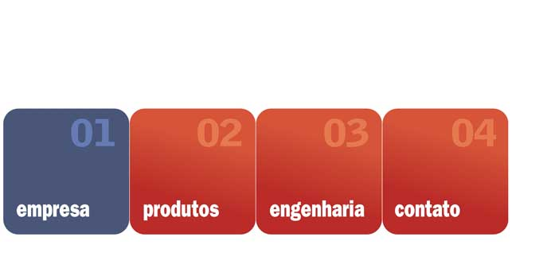

|

MÃO-DE-OBRA: competência A Fergel valoriza a competência de cada colaborador e busca a sua capacidade total para a realização das atividades, identificando possíveis necessidades de aprimoramento e de acordo com esse diagnóstico, disponibiliza os treinamentos necessários. A empresa assegura que cada colaborador atenda aos requisitos de competências desejáveis para a realização de suas atividades, de modo a não prejudicar o desempenho da organização quanto à qualidade de seus serviços. Competência, Conscientização e Treinamento Para manter um programa de estimulo à competência, conscientização e treinamento, a Fergel mantém em procedimento descrito toda a sistemática do processo de qualificação e treinamento do pessoal que executa tarefas que afetam a qualidade do produto, onde estão incluídos os seguintes assuntos; • Identificação das prioridades para treinamentos através dos levantamentos das necessidades de competência • Cronograma de treinamento • Avaliação dos treinamentos • Registros dos treinamentos realizados |
|
| Fergel Indústria e Comércio de Ferro e Aço da Amazônia Ltda. © 2006-2011 • Webdesign: Carlos Palácio | |